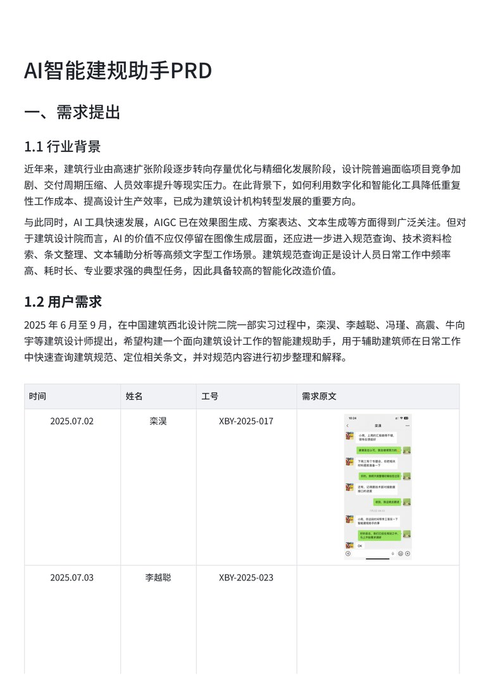

01 / RAG + Agent / 中国建筑西北设计研究院二院一部
AI 智能建规助手
面向建筑师高频规范查询场景，设计「建筑规范知识库 + AI 规范助手」双模块架构，主导需求调研、数据清洗标注、RAG 策略调试、LLM 选型与原型规划。
- 基于真实需求记录与问卷调研，验证规范查询高频痛点：49% 受访者每周查询 5-10 次，78% 认为条文查找耗时，92% 认为会影响项目进度。
- 收集 68 本建筑规范、约 245 万字文本，完成去重、噪声清理、章节拆分、图纸 OCR 与人工标注，建立可追溯知识库。
- 通过测试集评估确定 Top-K = 4、切片长度 500、相关性阈值 50% 的 RAG 检索策略。
- 基于阿里云百炼比较通义千问 MAX、通义千问 2.5-72B 与 Llama3.3-70B-Instruct，综合效果与成本选择 Llama3.3-70B-Instruct。